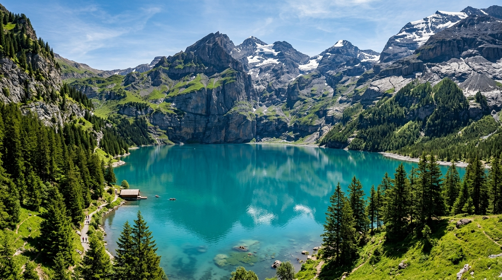
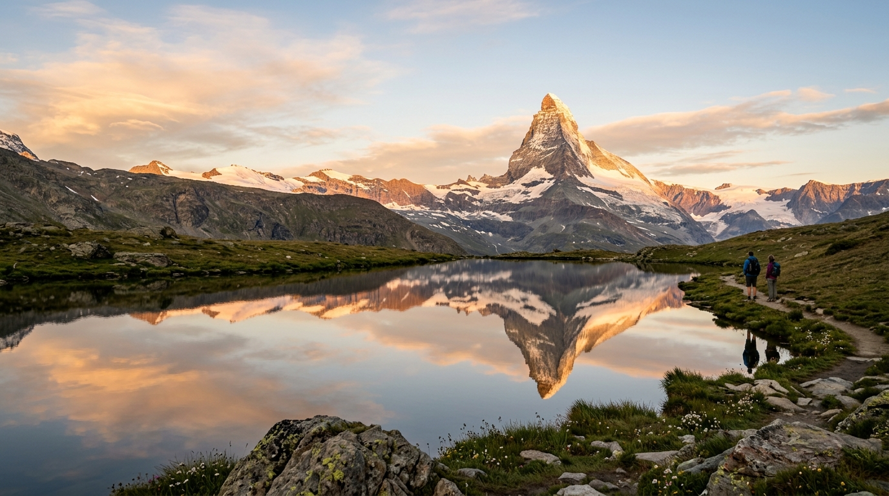
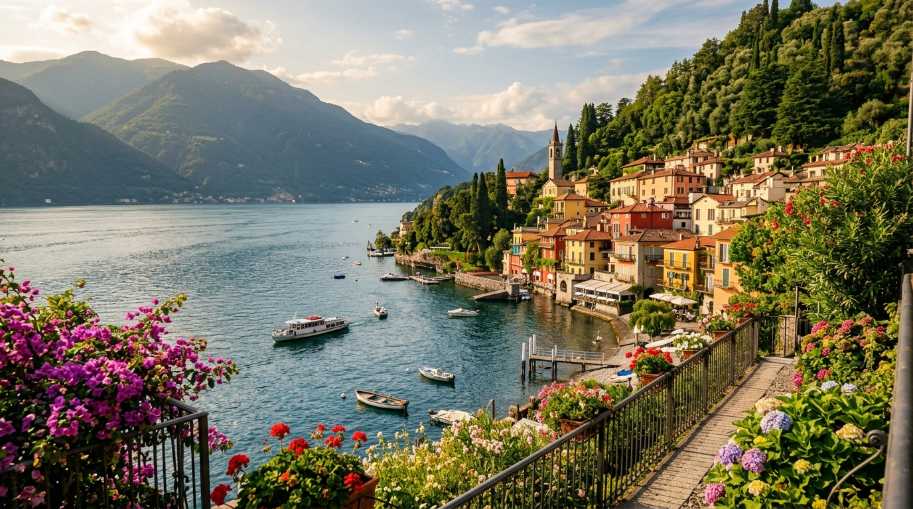

A breathtaking 14-day expedition exploring the towering peaks of Switzerland and the rich cultural soul of Northern Italy.
Hike the high panoramic Heuberg loop trails overlooking the most spectacular turquoise glacial lake in Switzerland, before a thrilling ride on the mountain coaster.

Ride Europe's highest open-air cogwheel railway up to 3,089 meters. Witness the majestic Matterhorn reflecting in Riffelsee and trace the Valais Blacknose sheep trail.

Escape the city to the "Pearl of Lake Como." Stroll Varenna’s Walk of Lovers and cruise the deep blue waters on a scenic passenger ferry to stunning Bellagio.
Click any card to expand schedules and booking details
Transition from Zurich Airport to picturesque Lucerne. Settle in, cross the historic Chapel Bridge, see the Lion Monument, and dine in the Old Town.
Ride the world's steepest funicular up to Stoos, complete the spectacular Klingenstock to Fronalpstock ridge hike, and have lunch at the summit.
Take the scenic Luzern-Interlaken Express into the Bernese Oberland. Drop bags in Wengen and explore the cliff-side villages of Mürren and Gimmelwald.
Descend into Lauterbrunnen valley to stand behind Staubbach Falls and enter the inside-mountain glacier waterfalls at Trümmelbach, before shifting base to Grindelwald.
Ascend Brienzer Rothorn on a historic mountain steam train, stroll the famous Brunngasse in Brienz, and take a relaxing ferry cruise across Lake Brienz.
Enjoy adrenaline-pumping descents (Zipline, Mountain Carts, Trottibikes) down Grindelwald-First, walk the First Cliff Walk, and hike to Bachalpsee lake.
Relocate to Interlaken. Day trip to Kandersteg to ride the mountain coaster and complete the breathtaking Heuberg Loop panorama hike above Oeschinensee lake.
Ascend Harder Kulm funicular for a panoramic lunch overlooking Interlaken, Thun, and Brienz. In the afternoon, board the scenic train climbing into Zermatt.
Ascend the historic Gornergrat cogwheel train, see the Matterhorn reflect in Riffelsee, and hike the themed "Meet the Sheep" trail to find the Valais Blacknose sheep.
Ascend to Europe's highest cable car station at Matterhorn Glacier Paradise. In the afternoon, cross the border into Italy via the Simplon Tunnel to Milan.
Take a day trip to the spectacular alpine waters of Lake Como. Wander Varenna, cruise by ferry to Bellagio, and enjoy a scenic lakeside lunch.
Enjoy skip-the-line guided tours of Milan's ultimate masterpieces: Leonardo da Vinci's Fragile Last Supper and the colossal Duomo & Rooftops.
Explore Milan at your own pace. Return to Duomo terraces for photos, spin on the bull's mosaic in Galleria, see Sforza Castle, and enjoy aperitivo in Navigli.
Enjoy a final Italian breakfast in the CityLife district, complete last-minute shopping, and head to the airport for your flight home.